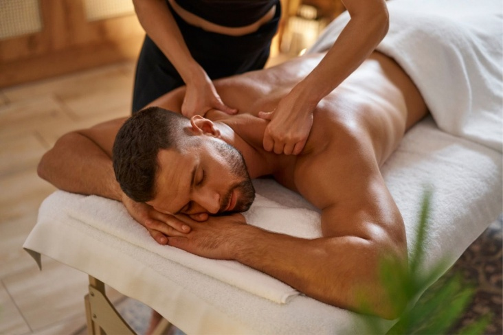
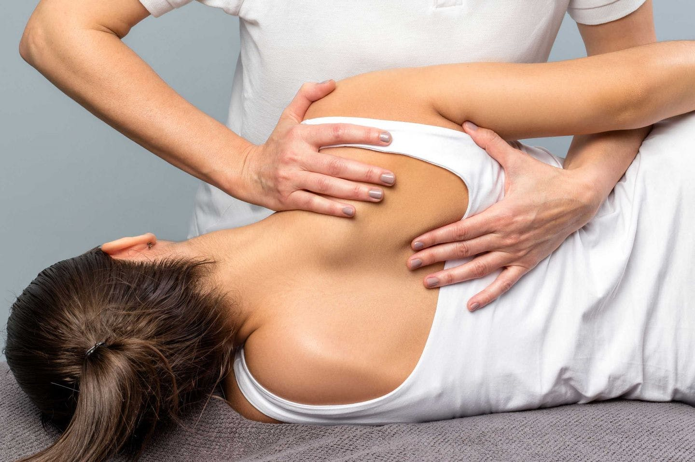

Мануальная терапия в прямом смысле является «лечением» руками, в процессе которого используются различные приёмы и методики. Воздействие затрагивает все структуры организма: мышцы, суставы, кости, связки и сухожилия.
Мануальные техники массажа подходят мужчинам и женщинам любого возраста. Они доказали свою эффективность как при самостоятельном использовании, так и в комплексном лечении. В статье мы расскажем о мануальных техниках массажа, преимуществах, показаниях и противопоказаниях.
Часто мы взаимозаменяем понятия «массаж» и «мануальная терапия». Казалось бы, оба вида воздействия оказываются руками, и различия должны быть минимальны. Но разница велика
Поскольку мануальные техники подразумевают глубокое воздействие на организм, они имеют как показания, так и противопоказания.
В основе манипуляционного воздействия – толчок, продолжающий движение, цель которого – увеличение напряжения в суставе.
Специалист при выполнении подобной техники прилагает большие усилия. Непосредственно перед процедурой сустав фиксируется таким образом, чтобы предотвратить его какое-либо движение. Однако воздействие значительной интенсивности не предусматривает болезненность и дискомфорт.
Манипуляционные техники массажа применяются при нарушениях в области крестца и позвоночника.
Мобилизационная техника массажа более эффективна в сравнении с манипуляционным вариантом. Она отличается более мягким воздействием, влияет на все ткани в определённом сегменте позвоночника. Мобилизационная техника может использоваться как в качестве подготовки к манипуляции, так и как самостоятельная процедура.
Результат мобилизационной техники мануальной терапии – увеличение подвижности суставов, устранение отёчности, нормализация кровообращения.
Применяются для того, чтобы улучшить мышечный тонус и состояние связок, убрать напряжение и боли. «Мягкими» они прозваны потому, что в них нет резких движений.
Они абсолютно безопасны, поскольку в них не используются грубые манипуляции. Особенно полезны такие технологии для пожилых людей и личностей с ослабленным здоровьем, детей и подростков. Использование мягких техник направлено на укрепление связочного аппарата, приведение тонуса мышц в норму.

На сеансах, на которых применяются мягкие техники, затрагиваются те ткани, с которых началось заболевание. Это приводит к восстановлению нормальной работы пострадавших мышц, что улучшает общее состояние организма.
Во время мягкого мануального массажа оказывается воздействие на мышцы и связки, кожу и подкожно-жировую клетчатку. Происходит стимулирование нервной системы, запускается нормальная работа кровеносной и лимфатической систем.
К мягким мануальным техникам массажа для мужчин и женщин следует отнести постизометрическую релаксацию. Суть данного приёма состоит в чередовании периодов быстрых минимальных надавливаний с пассивным вытяжением мышц в течение равного отрезка времени. Цикл воздействий может повторяться около 6 раз. В результате проводимых мероприятий полностью исчезает болевой синдром.
Правильно выполненные процедуры с мануальными техниками массажа значительно улучшают качество жизни. Они позволяют забыть о головных болях и головокружениях, дискомфорте в спине и суставах, улучшают работу внутренних органов. После серии сеансов восстанавливается подвижность спины и суставов, убираются мышечные зажимы, корректируются органические нарушения.
Качество и эффективность мануальных техник массажа напрямую зависит от опыта и квалификации специалиста. Перед подобным воздействием рекомендуется получить консультацию лечащего врача.